Evento principal
CIS 2026 Congresso de Integração Cirúrgica do RJ
Um encontro criado para profissionais da saúde que buscam atualização real, networking qualificado e contato com grandes nomes do mercado.
Ingresso
Garanta sua vaga
Confira o lote atual e compre pela Sympla.
CIS 2026
Sobre o Evento
CIS 2026
O CIS 2026 é um congresso presencial voltado para a excelência cirúrgica, reunindo profissionais da saúde em uma experiência científica e prática no Rio de Janeiro.
O que é o CIS
Integra cirurgiões, enfermeiros, gestores e profissionais da saúde para compartilhar avanços e fortalecer uma nova cultura cirúrgica.
O que você encontrará
- Palestras com especialistas
- Painéis multidisciplinares
- Discussões práticas
- Networking qualificado
Para quem é
- Cirurgiões
- Enfermeiros
- Instrumentadores
- Gestores e estudantes
Transformar a realidade cirúrgica através do conhecimento
O CIS promove atualização científica e valoriza as equipes do centro cirúrgico.
Próximos Eventos
Palestrantes
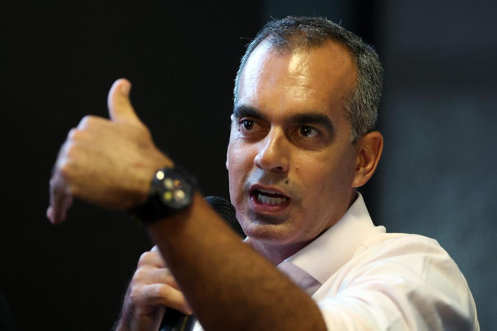
Dr. Gustavo Caldeira
⚽ Mesa redonda
Cirurgia + Fisioterapia
Tema:
Do centro cirúrgico ao retorno ao jogo: integração entre cirurgia e fisioterapia no cuidado do atleta de alto rendimento
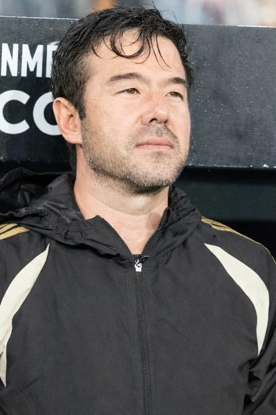
Dr. Fernando Sassaki
⚽ Mesa redonda
Cirurgia + Fisioterapia
Tema:
Do centro cirúrgico ao retorno ao jogo: integração entre cirurgia e fisioterapia no cuidado do atleta de alto rendimento
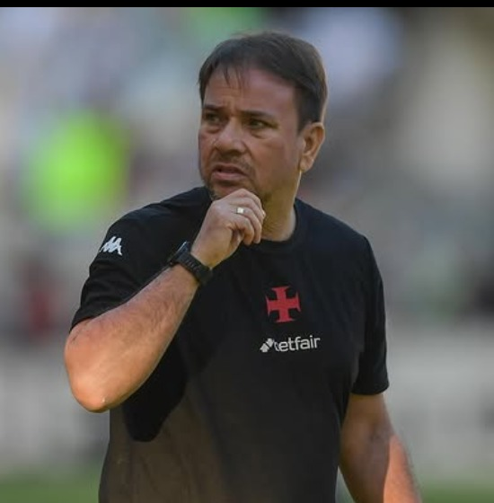
Dudu Calçada
Fisioterapia
Palestrante confirmado
Tema:
Do centro cirúrgico ao retorno ao jogo: integração entre cirurgia e fisioterapia no cuidado do atleta de alto rendimento
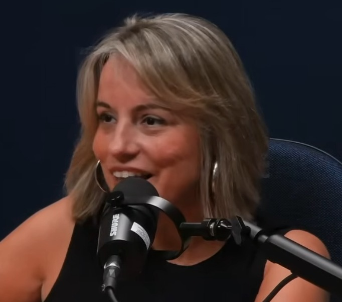
Renata Xisto
Psicologia
Palestrante confirmada
Tema:
Por trás do bisturi existem pessoas: valorização do profissional de saúde e a integração humana como base da cirurgia segura
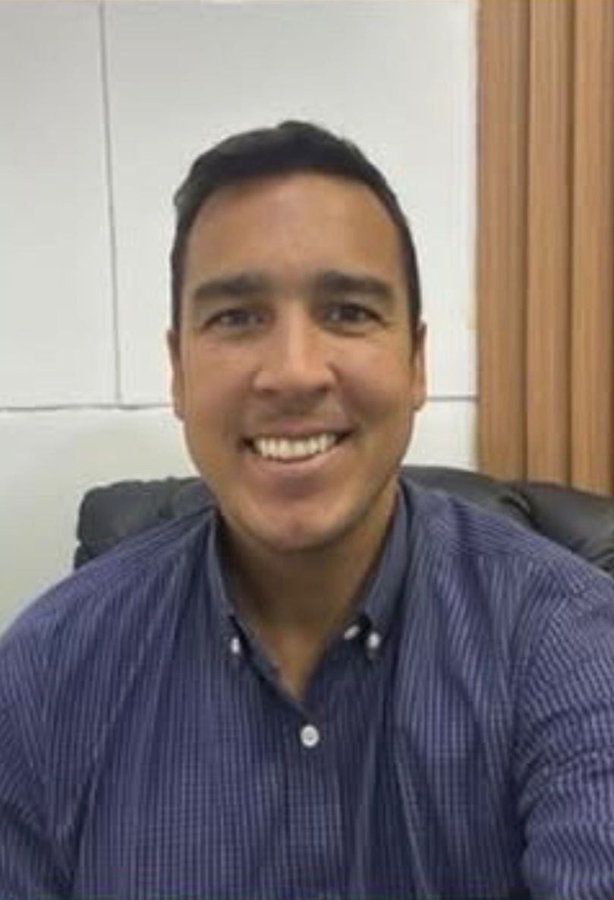
Dr. Pedro Carvalho Matos
Ortopedia
Palestrante confirmado
Tema:
Integração médico-enfermagem no ambiente cirúrgico militar: protocolos operacionais em cirurgia de joelho e ombro
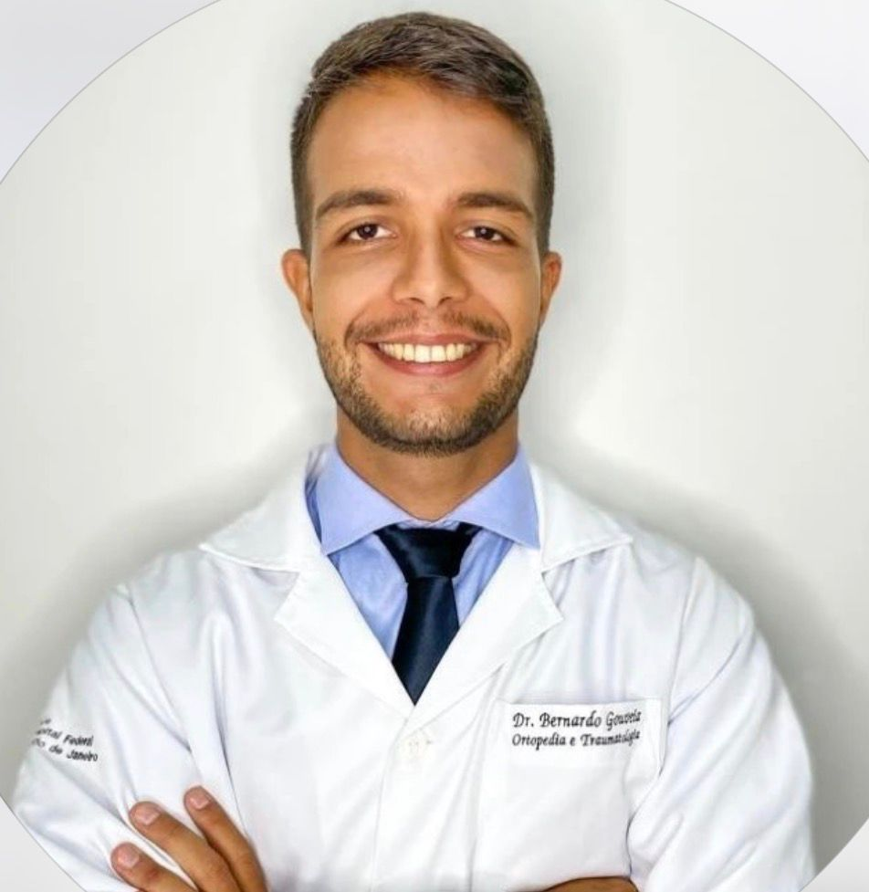
Dr. Bernardo Gouveia
Ortopedia
Palestrante confirmado
Tema:
Residência médica e residência de enfermagem no centro cirúrgico: integração como ferramenta de excelência na formação e segurança do paciente
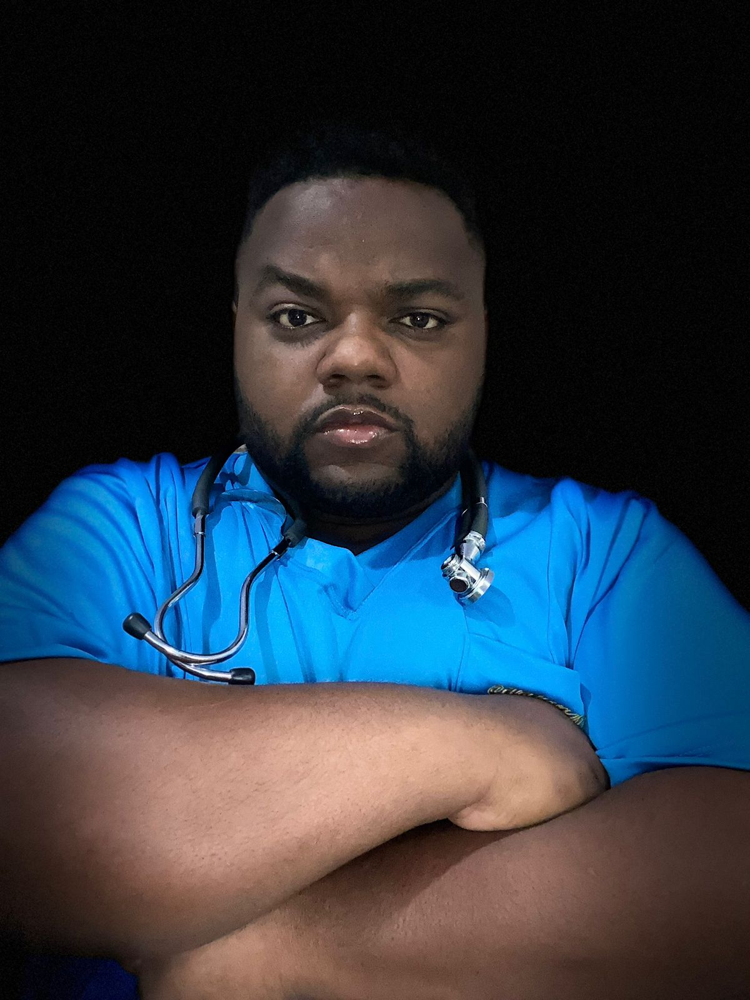
Renan Soares
Enfermagem
Palestrante confirmado
Tema:
A enfermagem no home care: cuidado humanizado, responsabilidade, valorização profissional dentro da jornada assistencial
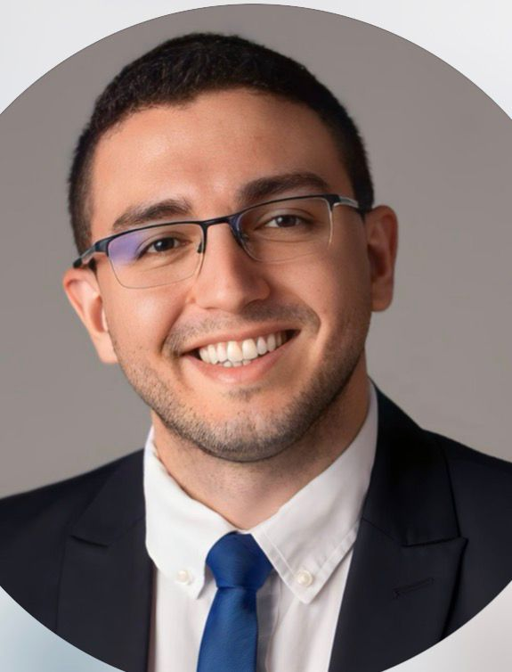
Mateus Gonçalves
Jurídico
Palestrante confirmado
Tema:
PEC 19 e o piso da enfermagem: efeitos jurídicos e práticos para escalas, contratos e segurança no centro cirúrgico
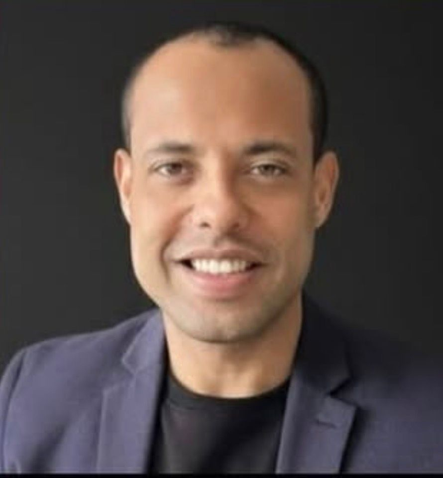
Will Oliveira
Enfermagem
Palestrante confirmado
Tema:
CME de alta performance: validação de processos, tecnologia e integração com o centro cirúrgico
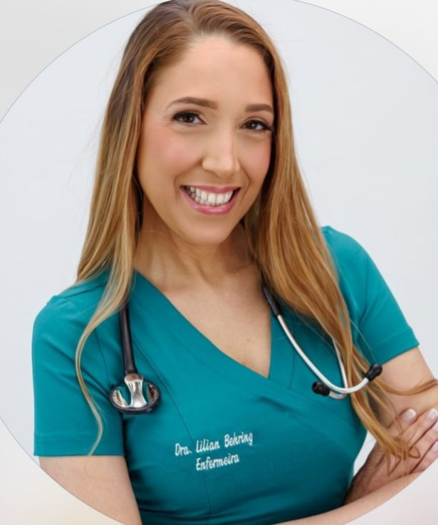
Lilian Bering
Enfermagem
Palestrante confirmada
Tema:
O futuro da enfermagem é agora: valorização profissional, protagonismo e políticas públicas que transformam a assistência
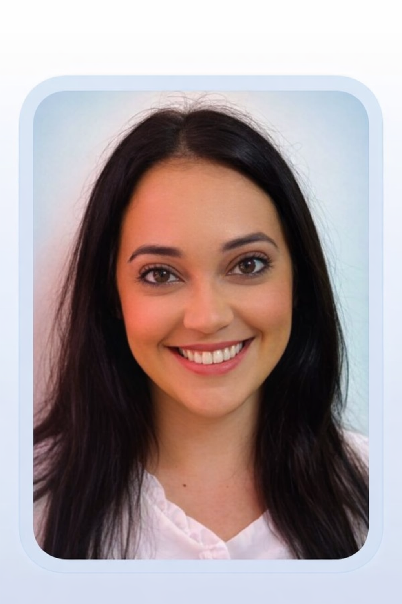
Vanessa Vianna
Enfermagem
Palestrante confirmada
Tema:
Residência médica e residência de enfermagem no centro cirúrgico: integração como ferramenta de excelência na formação e segurança do paciente
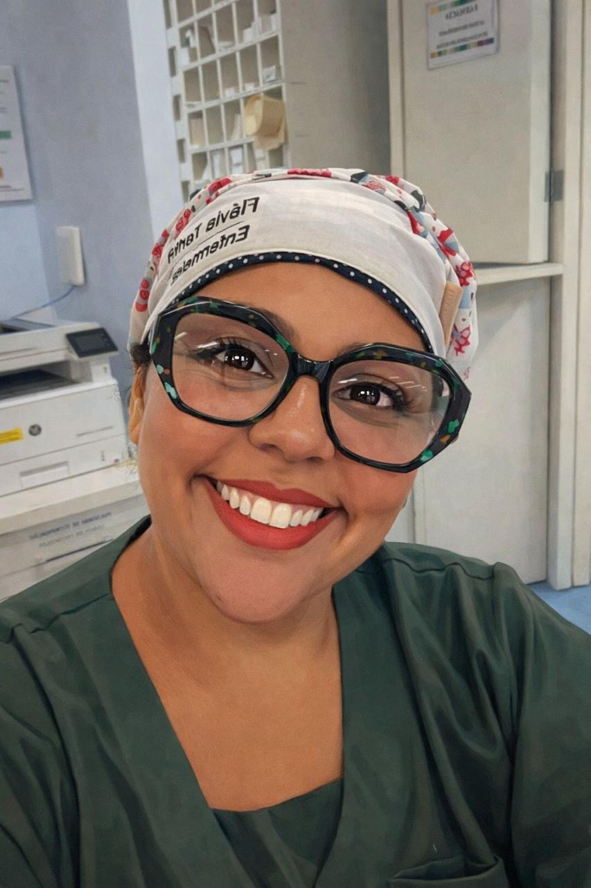
Flávia Turibi
Gestão hospitalar
Palestrante confirmada
Tema:
Gestão hospitalar público-privada na prática: quando a decisão administrativa impacta diretamente o desfecho clínico
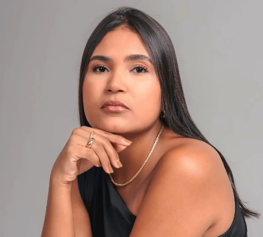
Juçara Costa
Contabilidade
Palestrante confirmada
Tema:
Direitos, impostos e dinheiro na prática: como o profissional da saúde pode se proteger financeiramente e crescer com inteligência contábil
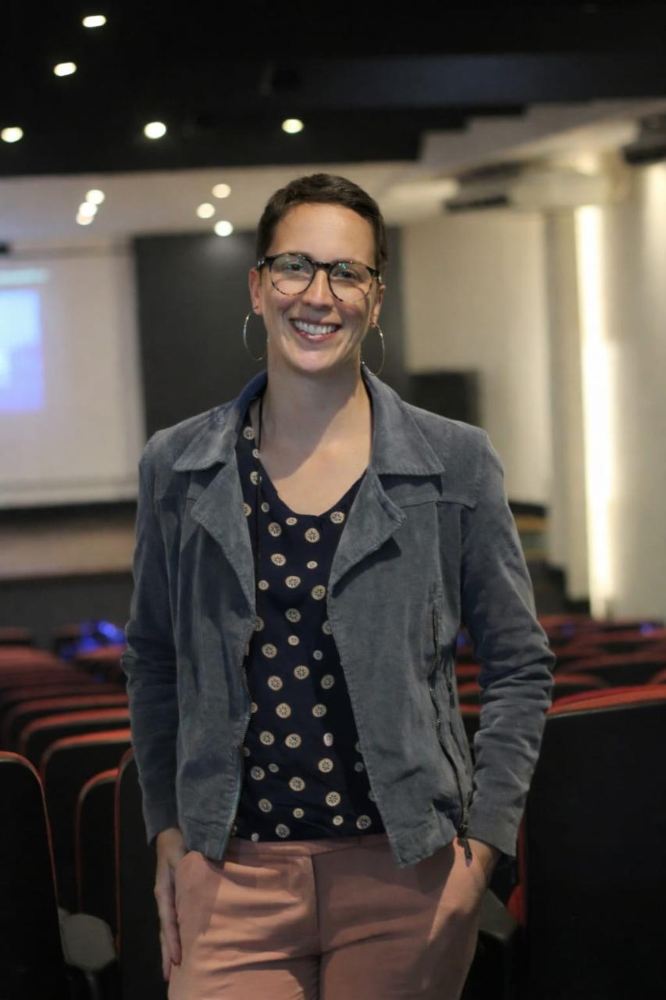
Maria Paula Bacan
Enfermagem
Palestrante confirmada
Tema:
O que acontece com um OPME antes de chegar ao paciente? Os bastidores invisíveis da CME e a cadeia de confiança entre enfermagem, esterilização e equipe médica no centro cirúrgico
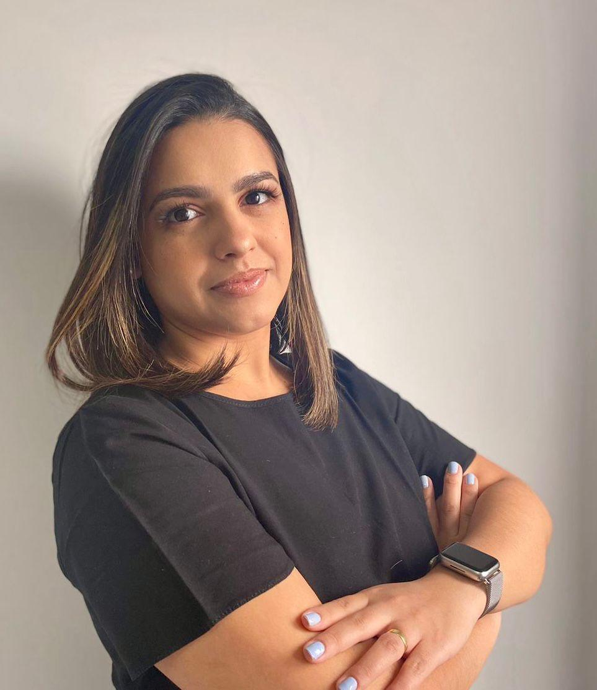
Letícia Castelucci
Enfermagem
Palestrante confirmada
Tema:
CME como pilar da segurança cirúrgica: práticas, rastreabilidade e formação de profissionais para um bloco operatório mais seguro
Evento anterior
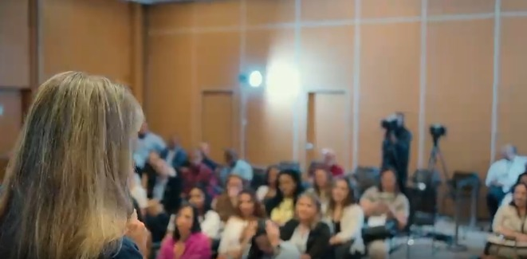
Momentos do evento
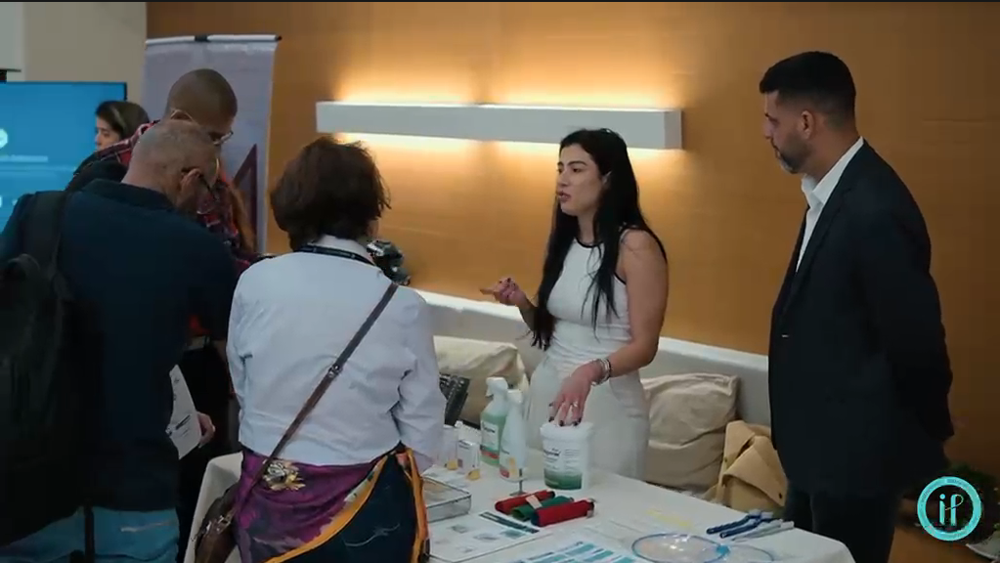
Networking
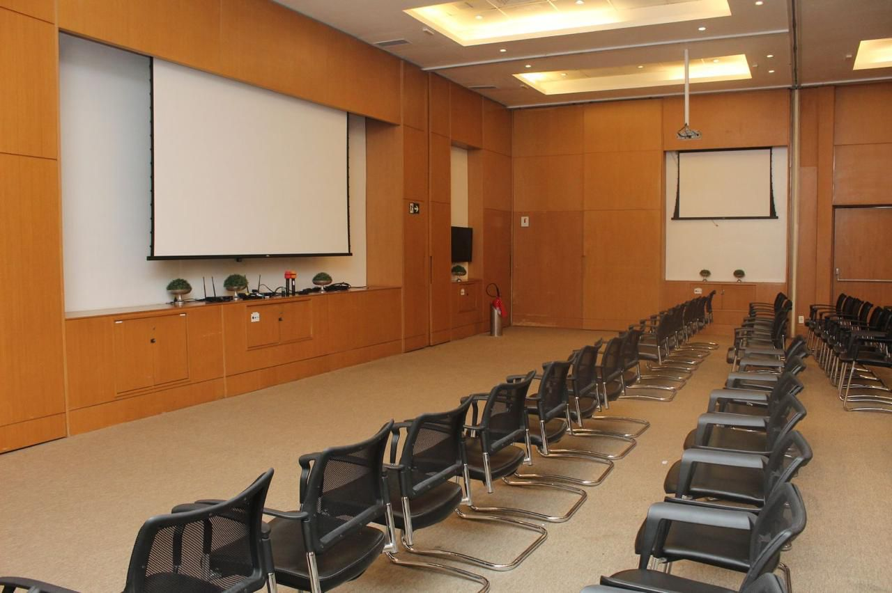
Estrutura